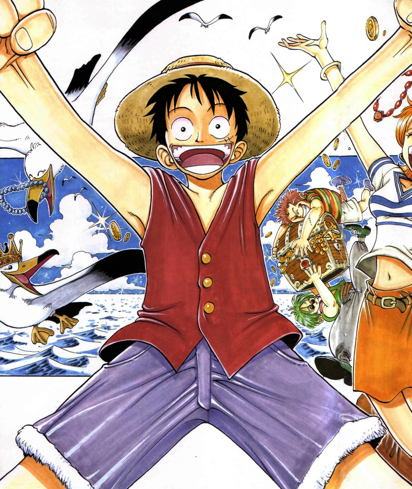
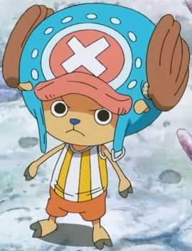

Monkey D. Luffy

Monkey D. Luffy, também conhecido como "Luffy do Chapéu de Palha" ou "Chapéu de Palha", é um pirata e o principal protagonista do anime e mangá One Piece.
Roronoa Zoro

Zoro, que é conhecido como O Caçador de Piratas, é um pirata e ex-Caçador de Recompensas, e também um espadachim que usa 3 espadas
Chopper

Tony Tony Chopper é uma rena. Ele é o médico da tripulação dos Piratas do Chapéu de Palha.